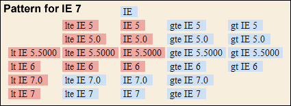
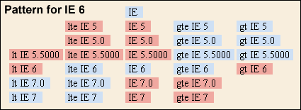
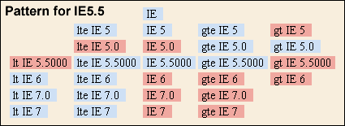
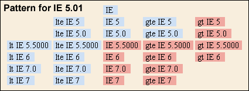

A Guest Article by Manfred Staudinger
Most of the improvements in conditional comments talked about in this article have now been incorporated into an easy-to-install set of IE standalone versions available at Tredosoft.com. We recommend this install very highly, so enjoy!
Multiple versions of Explorer for Windows on a single computer have revolutionized CSS bug testing for websites, but sadly the different IE browser windows appear identical to the eye, potentially leading to confusion and testing mistakes. Also, Microsoft's proprietary Conditional Comments don't operate properly on these standalones, making advanced usage of CC's a guessing game. These problems have now been resolved! But first, a little background regarding the standalones.
When Joe Maddalone first came up with Multiple Version of IE in Windows XP Pro in November 2003, this was a great relief for web developers. Technically speaking, it was made possible by using a system feature which may be functionally described as a process specific subroutine library, for otherwise system wide shared .dll and .com modules. It is supported by the system scheduler from Win98 SE onwards and is triggered by an empty file with the name process.exe.local.
For Windows to allow several Explorer versions running side by side on one machine, this process specific subroutine library, in short process library , must contain the starting module for the process (iexplore.exe), the trigger (iexplore.exe.local), and any required process specific dll's. For more details, see Joe Maddalone's consolidated info: Multiple IEs in Windows.
Get the conveniently prepared standalones themselves here.
Multiple Standalone Installer Now Availible! (Oct '06) We no longer must manually install and modify the IE Standalones, because Yousif Al Saif of tredosoft.com has compiled IE3 thru IE6, along with all title markers and registry fixes, into a single easy installer package. It even comes with special files to keep PNG scripts working in IE6 for proper testing. Wow. Install IE7 from MS first, then go here for instructions. Way to go, Yousif!
One question bothers me: If Win98 SE (and the feature in question) was available as early as April 1999, why did the feature I refer to as the process library took more than 4 years to surface? In my opinion, it's partially because the Windows OS is lacking any concise description, and also because Microsoft seems to have obscured it by using at least three different names to designate this feature: Isolated Components, DLL/COM Redirection, and Side-by-side approach for implementing private DLLs.
The last one is to be found in The End of DLL Hell (Rick Anderson, Microsoft, January 2000). Anderson also mentions "using a unique version number" for implementing private DLLs, a different approach which was called later on Side-by-side Component Sharing, contributing still further to the confusion!
Anyway, we now have standalones for each version of Explorer back to version 4, and that's great, but they can be made even better.
To enhance the usability of multiple IE's further, I would like to demonstrate 3 changes for versions IE 5.01, IE 5.5, and IE 6:
Although this is the simplest of the three modifications here, it took a long time to surface. To the best of my knowledge it was M. Cain, who in May 2005 proposed it for the first time and it was brought to my attention by David Wilson only recently. It is done by adding a backlevel module to each process library .
First download the file 3725.exe from Microsoft. You will find the page easily by searching for its FamilyID which is "6DEE32AB-B618-4FB3-9A45-CDD08162E167". The file description denotes it as "Win32 Cabinet Self-Extractor", but it should not (and will not apply anyway) be applied to your system.
Instead use WinZip (or an equivalent tool) and it will show you 7 files which are contained in 3725.exe. From these choose Wininet.dll to be extracted and put it into the folders of your IE standalones. This very same Wininet.dll (version 5.0.2614.3400, date April 14, 1999) applies to all of the standalones.
That's it - enjoy testing with cookies!
To achieve Modification #2 two things have to be done:
1. checking and possibly changing a registry string, and
2. adding a modified module to each process library
If the registry string in question, Window Title, exists in your registry, it will cause all your different Internet Explorer versions to display the same character string on the title bar. This character string comes from the Window Title string and its default value is, you guessed it, "Microsoft Internet Explorer". For some background information you may want to read How to Change the Internet Explorer Window Title on the Microsoft site.
In order to check for the Window Title string's existence, click the Start button, click Run, and type in "regedit.exe". This launches the registry editor, where you may then navigate to the Main key. It will be found under HKCU\Software\Microsoft\Internet Explorer\ where "HKCU" may be read as "HKEY_CURRENT_USER".
Once in Main, look carefully for a string called Window Title, and if there is one, right click it, and rename it to zWindow Title.
To enable the Version Labels for your IE 4.01 Standalone (for the hint I wish to thank Derek Ahmedzai), the procedure is very similar. This time you start with "HKLM", which means "HKEY_LOCAL_MACHINE", go for HKLM\Software\Microsoft\Internet Explorer\Main and again look for the Window Title string.
If there is none, right click Main, select "New", choose "String Value" for the data type, and rename the resulting "New Value #1" to Window Title.
Now you have a Window Title string anyway, right click it, and select "Modify". When the "Edit String" menue pops up, you can set the value data to "IE 4.01 (Microsoft Internet Explorer)" and click "OK". That's all you need for IE 4.01 !
Follow these instructions exactly to the letter, as for sure, the Registry Database is not designed for the "trial and error" approach. If you would like to change something on your own, you should at least have read and understood the Description of the Microsoft Windows registry beforehand.
To finally enable the Version Labels for your IE 5.01, IE 5.5, and IE 6.0 Standalone, it is also necessary to add a specially modified module (BROWSELC.DLL) to the process library . The modification consists in replacing the string "Microsoft Internet Explorer" (which appears in the title bar) by "IE 5.01 (Microsoft Internet Explorer)", "IE 5.5 (Microsoft Internet Explorer)" and "IE 6.0 (Microsoft Internet Explorer)" respectively. Once those .DLL's are in place, the browser window top bar will proudly announce what IE version it is, dispelling all confusion.
The discussion assumes you have IE 7 as your primary or native browser and IE 6 is a Standalone version. Should you have IE 6 as the primary Explorer browser, leave it untouched, the lack of a version label in the title bar will indicate that it is IE 6 anyway.
To download the .DLL's, right click the links below, select "Save target as", and save into the folder that contains the IEXPLORE.EXE file for each of the standalones. In other words, those .DLL's are each specific to either IE 5.01, IE 5.5 or IE 6.0, and each must share the same folder with the primary .EXE file for each standalone browser version. All three DLL's have the same name (BROWSELC.DLL), so don't put them in the same folder at any time!
For details on the subject, go straight to the source and read About Conditional Comments on the Microsoft site. Some say that using this proprietary feature is a bad practice because CC's are non-standard, but basically it's just code that has been stuffed within an HTML comment, a comment internally labeled so that various IE versions may reach into that comment and pull out parsable code. If all browsers had something similar, bug fixing would be a whole lot more feasable in Opera and Mozilla.
Further, CC's do validate because to the validator and non-IE/Win browsers, a CC looks like a normal HTML comment and thus is ignored.
Most of the conditional comment behaviors may be restored to the standalones by performing a simple one time edit to your registry. It consists only of renaming a particular key, which currently says IE, so that it says zIE.
To do this, click the Start button, click Run, and type in "regedit.exe". This launches the registry editor, where you may then navigate to the desired registry key. The target key, called IE, may be found under HKLM\Software\Microsoft\Internet Explorer\Version Vector\. In some Windows versions the "HKLM" may appear as "HKEY_LOCAL_MACHINE"
Once in Version Vector, look for the key called IE, right click it, and rename it to zIE.
(If you are running a 64-bit version of Windows, I would like to get in touch with you, to figure out the correct procedure for changing the key. A "registry reflector" copies values forth and back between the above mentioned key and HKLM\Software\Wow6432Node\Microsoft\Internet Explorer\Version Vector\, which is used for 32-bit applications running on a 64-bit machine).
The next time Internet Explorer is started, the missing IE key will cause it to fetch needed information from other modules, where at least 4 slightly different character strings (containing version, subversion, build etc.) are available. The information found there will enable the standalones to function almost perfectly when presented with Conditional Comments. If you want to restore your OS to the previous registry state and browser behavior, simply rename the zIE key back to IE and restart Internet Explorer.
If you have never altered your registry before, be assured it is not dangerous, provided you follow these instructions exactly to the letter!. But, should you allow temptation to take control, and you rashly make other edits, Neither I nor Position Is Everything are responsible for what might happen!
With the four different Internet Explorers (IE 5.01, IE 5.5, IE 6 and IE 7.0) we have a total of 27 different expressions (plus 22 negations) that may be used within a Conditional Comment, all of which will work reliably after the registry modification. These "expressions" within the Conditional Comments normally determine which Explorer versions will look inside the CC for parsable code. It is this functionality you have just restored.
To test your registry edit for correct behavior, run a test using the Internet Explorer of your choice, and you will get either true or false for each of the 27 CC expressions. The true/false patterns from these tests (simplified screenshots) are what you will see on the live test page.
 If you install IE 7, this is the pattern what you should see for it and also for all your IE Standalone browsers if you haven't applied the registry change. Thus to be able to tailor unique styles for all your IE versions, you have to make the registry change.
 This shows the pattern from the test with IE 6: if you have installed IE 7, you will get this only after the registry change. - But in case you don't have IE 7, this will be the picture for all your IE versions, and again it is vital to edit the registry for applying unique styles to them.
 All of the results from the IE 5.5 Standalone are now correct, thanks to a valuable hint from Thierry Koblentz at TJKDesign: simply replace "IE 5.5" by "IE 5.5000" in the expressions and it works!
 The registry change restores the correct results from IE 5.01.
When you start up an Internet Explorer 5+, it goes to the registry and reads all of the Version Vector into an array to keep it in memory. This is done only once at the time of initialisation. If IE later on encounters the characters " <!--[if " while processing a web-page, it recognizes a so-called downlevel-hidden CC (the term "downlevel" was coined by MS in the times of the "browser wars" and denotes any non-MS browser as well as IE 4 and earlier). It will take the character string IE (or whatever you wrote instead) from the CC and search the Version Vector array for a match (not case sensitive). For example, if you code:
<!--[if zIE]> ... <![endif]-->
<!--[if zIE 6.0]> ... <![endif]-->
the result will be "true" in both cases, independent from the version of IE you run, if you followed the procedure above to the letter, "false" otherwise. But you could easily have substituted your name rather than zIE to create a personalized Conditional Comment!
The point of changing the registry key IE to zIE is simply that if the Internet Explorer does not find the IE key in the Version Vector, then it creates such an entry in the version vector array by using version information from the modules as a substitute, such enabling the use of CC's.
Apart from the dowlevel-hidden CC's, which many people find awful anyway, MS also invented the downlevel-revealed Conditional Comment: <![if IE]> ... <![endif]> . It does not only look ugly, it doesn't even validate! I would not have mentioned it here, if not John Lascurettes came up with a solution, where he used a downlevel-revealed CC inside a downlevel-hidden one.
This construct validates and enables us, to select certain combinations of IE's for which there is no solution with a single downlevel-hidden CC (see "Selecting IE's" below). But the solution is much more powerful, when considered in detail. Most importantly, you can hide html from any or from a selection of IE's. For example
<!--[if IE]><![if gt IE 6]><![endif]-->
html
<!--[if IE]><![endif]><![endif]-->
The html here will be selected by any browser except IE 6, IE 5.5 and IE 5.01. In this group you will find all browsers (including IE 7 and IE 5.2) which are capable of processing advanced css selectors. Furthermore, even the html is inside a downlevel-revealed CC, it is truly html (so it may contain comments) and not just a funny looking comment. In other words, the non-standard area is restricted to contain only the selection mechanism for IE, but no html.
For a working webpage we would like to complement the above by a more familiar looking downlevel-hidden CC, selecting IE 6, IE 5.5 and IE 5.01
<!--[if lte IE 6]> html <![endif]-->
If you want to apply a browser-side transformation to insert CC's into your html , then the first part of the example given above can be directly translated into XSLT:
<xsl:comment><![CDATA[[if IE]><![if gt IE 6]><![endif]]]></xsl:comment>
html
<xsl:comment><![CDATA[[if IE]><![endif]><![endif]]]></xsl:comment>
Here html may be any valid XSLT including literal result elements and even comments! Now the second part can be constructed along the same lines, because XSLT supports the system-property function. So we again use a downlevel-revealed inside a downlevel-hidden CC, wrapped in a XSLT if-clause .
<xsl:if test="system-property('xsl:vendor') = 'Microsoft'">
<xsl:comment><![CDATA[[if IE]><![if lte IE 6]><![endif]]]></xsl:comment>
html
<xsl:comment><![CDATA[[if IE]><![endif]><![endif]]]></xsl:comment>
</xsl:if>
In case the CC's are inserted with server-side XSLT, the first part remains unchanged. But the second part changes, because in absence of the system-property function we have to accept a html look alike or pseudo-html:
<xsl:comment><![CDATA[[if lte IE 6]>
pseudo-html
<![endif]]]></xsl:comment>
Finaly we can select any of the 16 different combinations of the four Internet Explorers, ranging from none to all. Some of the expressions are called less specific here, because they will also select future browsers with versions greater than 7.0.
The following terms are defined as:
To specify which versions will read the CC, the following arrangements may be employed:
<!--[if IE]><![if !IE]><![endif]--> html <!--[if IE]><![endif]><![endif]-->
<!--[if IE 5.0]> html <![endif]-->
<!--[if !IE 5.0]> html <![endif]-->
<!--[if IE 5.5000]> html <![endif]-->
<!--[if !IE 5.5000]> html <![endif]-->
<!--[if IE 6]> html <![endif]-->
<!--[if !IE 6]> html <![endif]-->
<!--[if IE 7.0]> html <![endif]-->
<!--[if lte IE 6]> html <![endif]-->
<!--[if IE 5]> html <![endif]-->
<!--[if !IE 5]> html <![endif]-->
<!--[if lte IE 6]><![if !IE 5.5000]> html <![endif]><![endif]-->
<!--[if !IE 6]><![if !IE 5.5000]> html <![endif]><![endif]-->
<!--[if lte IE 6]><![if gte IE 5.5000]> html <![endif]><![endif]-->
<!--[if !IE 6]><![if gt IE 5.0]> html <![endif]><![endif]-->
<!--[if lte IE 7.0]> html <![endif]-->
You may have noticed the symmetry between (2) and (3), and also between (6) and (7): The expressions for the former are negated for the later. Even more redundancy can be seen, because "gt xx" converts directly to "!lte xx", and "lt xx" converts directly to "!gte xx".
Manfred Staudinger
e-mail: Manfred.Staudinger@gmail.com
Last updated: July 4, 2008
Created Febuary 4, 2005